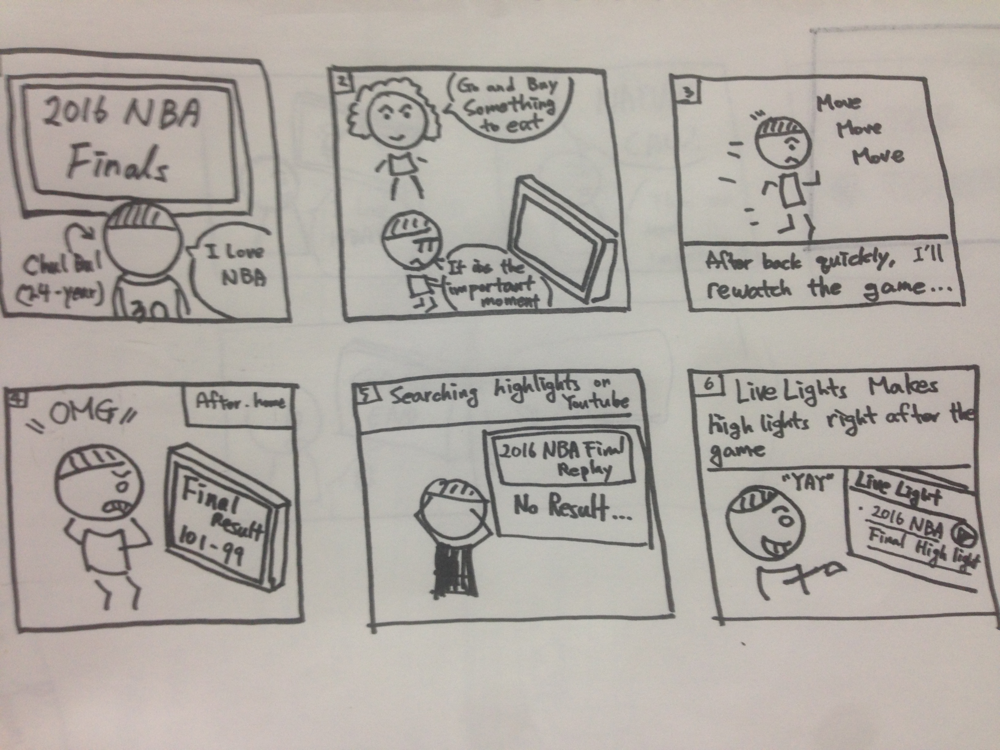
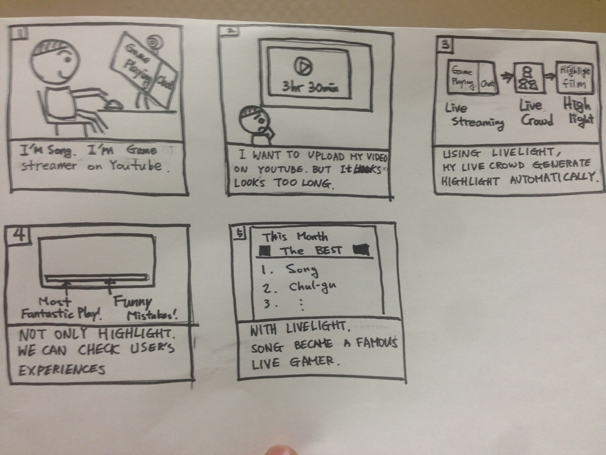

LiveLight: the crowdsourced auto hightlights from livestream videos
Tasks
Task 1
Mr. Chulbul, a 24-year-old student at KAIST loves watching NBA. Nature calls and he has to leave for the washroom. Upon coming back he realizes that he has missed a very important goal by Steph Curry. Also, he wants a highlight video for only Steph Curry after the game.
Design goals
The key moments in the video should be visually highlighted, so Chulbul can rewatch missed important moments.
The highlight video should be produced right after the end of the game.
Control over share/not to share. The annotation should be shared somehow to build the public database. On the other hand, for privacy, some video annotations should not be shared.

Task 2
Song Hana is a 19-year-old popular Twitch streamer. She plays a video game called Overwatch every day about 5 hours. Her gameplay is livestreamed and she wants to upload the cut of the live stream to Youtube instead of uploading the entire video.
Design goals
A lot of Youtube uploaders cut their videos instead of updating the entire videos. Therefore, the annotations made for the live stream should be reused for the edited cut.
She wants to promote her videos by making them more discoverable. Therefore, her videos should be searched with the annotations.
As she has a lot of followers, the fans are likely to give a huge amount of annotations. Proper strategies to mediate those massive amounts of contributions should be prepared.

Task 3
National Debate: Donald Trump and Hillary Clinton just finished a live debate. CNN’s data analyst Mark Choi wants to show the world which comments of Trump made voters angry.
Design goals
Mark Choi wants that system should show moments of Donald sorted by the number of dislikes.
The system should visualize the emotional distribution of the public for each moment from the video.
The system should also show top three parts of the video liked by the public.